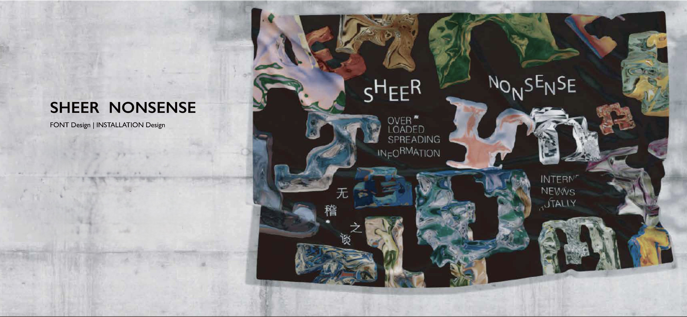
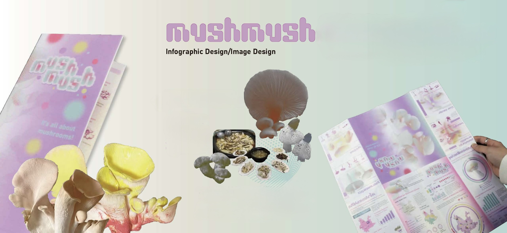
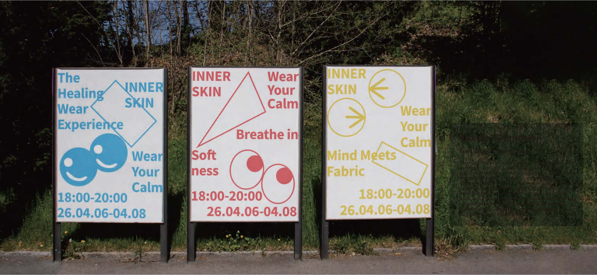
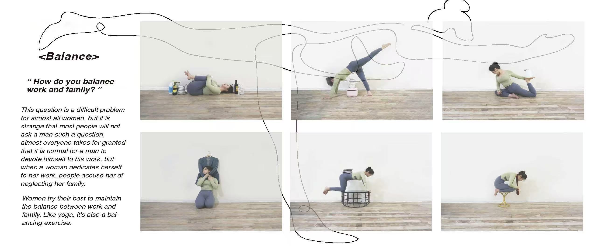
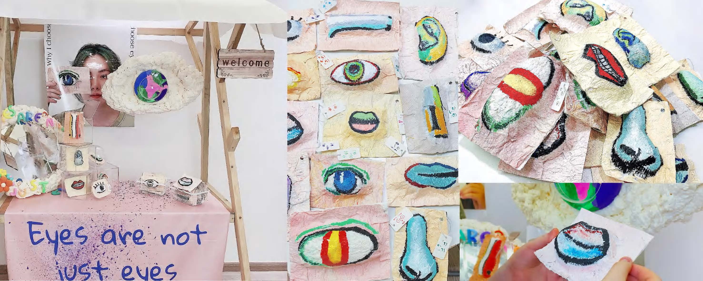
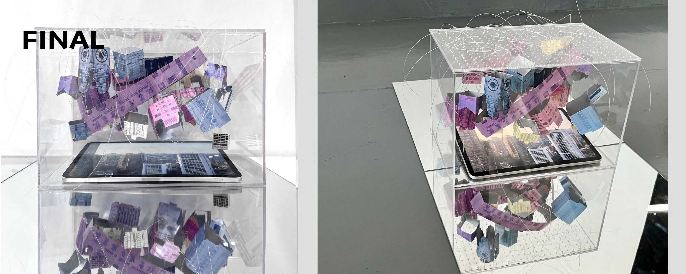

Font Design + Installation Design
The project collects 26 distorted online news topics and transforms each of them into a corresponding letter of the alphabet. Using the burning process of candle wax as a material metaphor, it visualizes how misinformation gradually warps, erodes, and loses its connection to the truth as it spreads.
MORE ABOUT THIS PROJECT